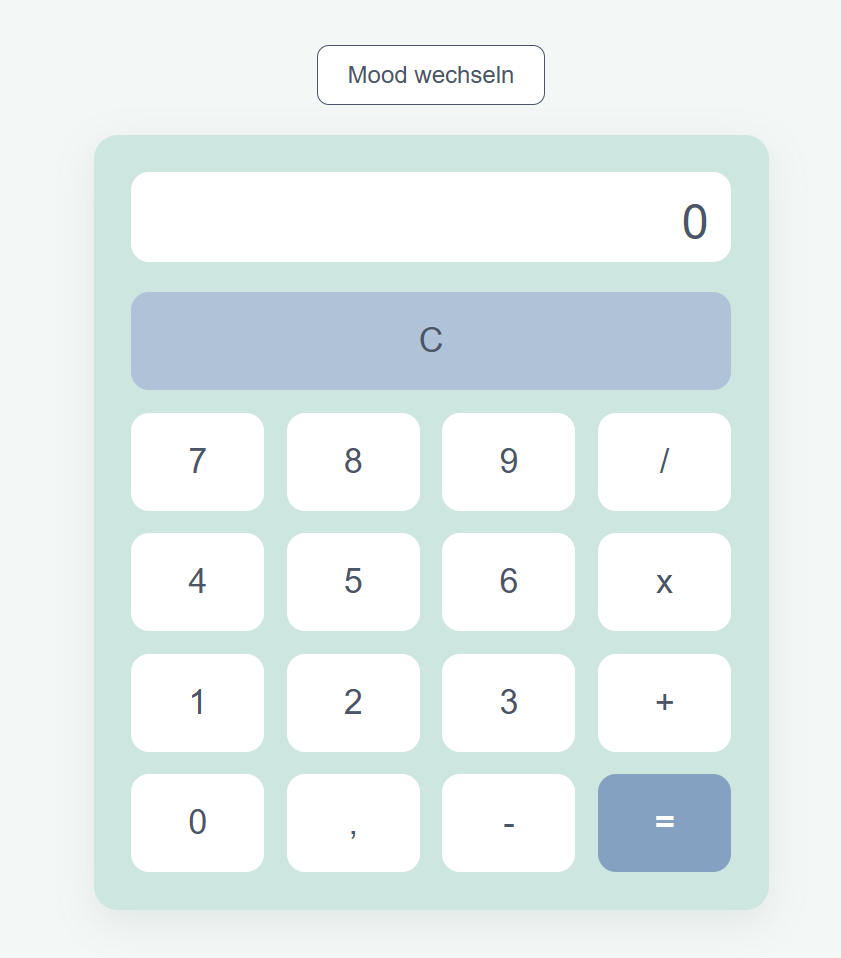
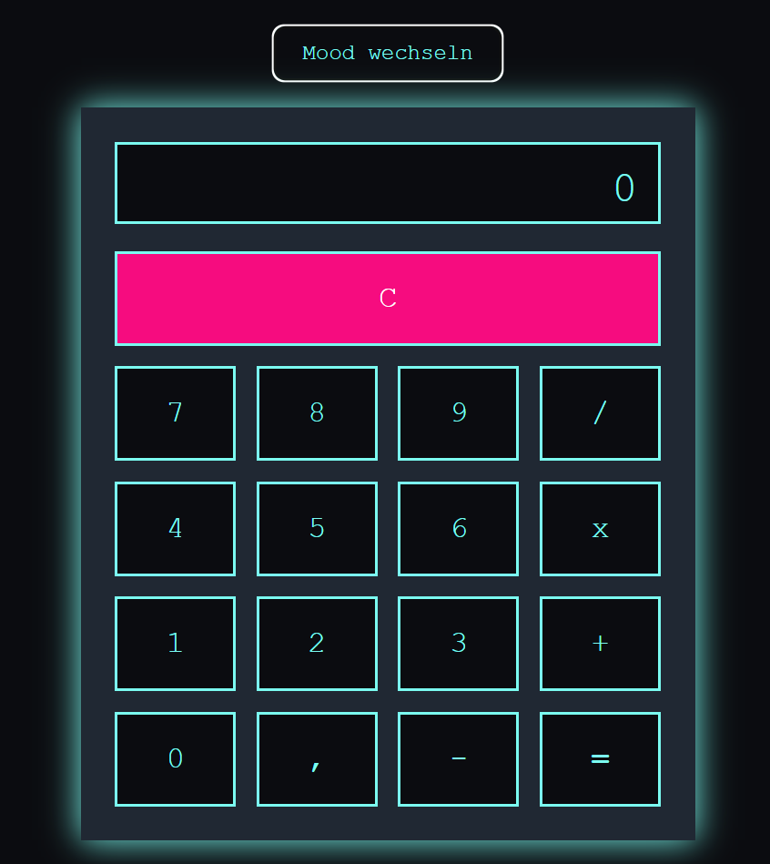

Das Pastell Design des Taschenrechners

Das Retro Design des Taschenrechners
Ein interaktives Design mithilfe von HTML, CSS und JavaScript

Das Pastell Design des Taschenrechners

Das Retro Design des Taschenrechners